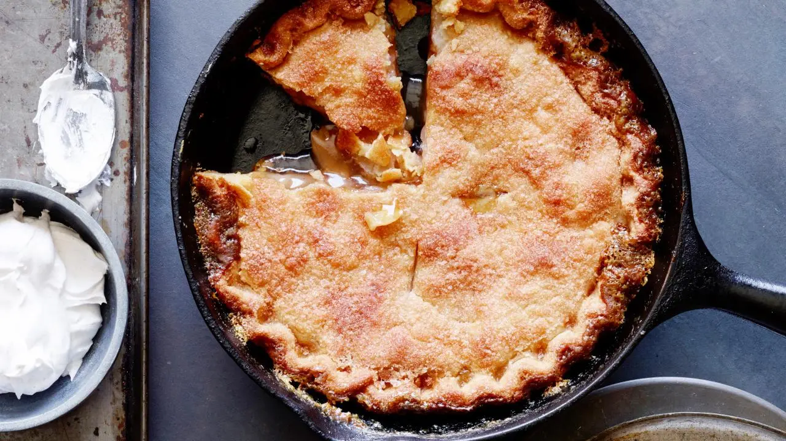

Mini Apple Crisp Skillet Recipt

Say hello to these adorable Mini Apple Crisp Skillets, perfect for satisfying your sweet tooth without going overboard!.
With a warm, cinnamon-spiced apple filling and a crispy oat topping, these personal-sized treats are sure to be a hit at your next gathering.
Ingredients
- 1 cup spice cake mix
- 3 tablespoons unsalted butter, melted, divided
- 2 apples, peeled, cored, and sliced
Steps
- Preheat oven to 375˚F (190˚C).
- In a small bowl, mix together the cake mix and 2 tablespoons of melted
- butter until the mixture is crumbly.
- Pour 1 tablespoon of melted butter into the bottom of two small cast-iron
- skillets.
- Arrange the apple slices in each skillet, ensuring the bottom is covered.
- Sprinkle cake mixture over the apples.
- Bake for 20 minutes, or until top appears crispy and edges are bubbling.
- Cool for 10 minutes.